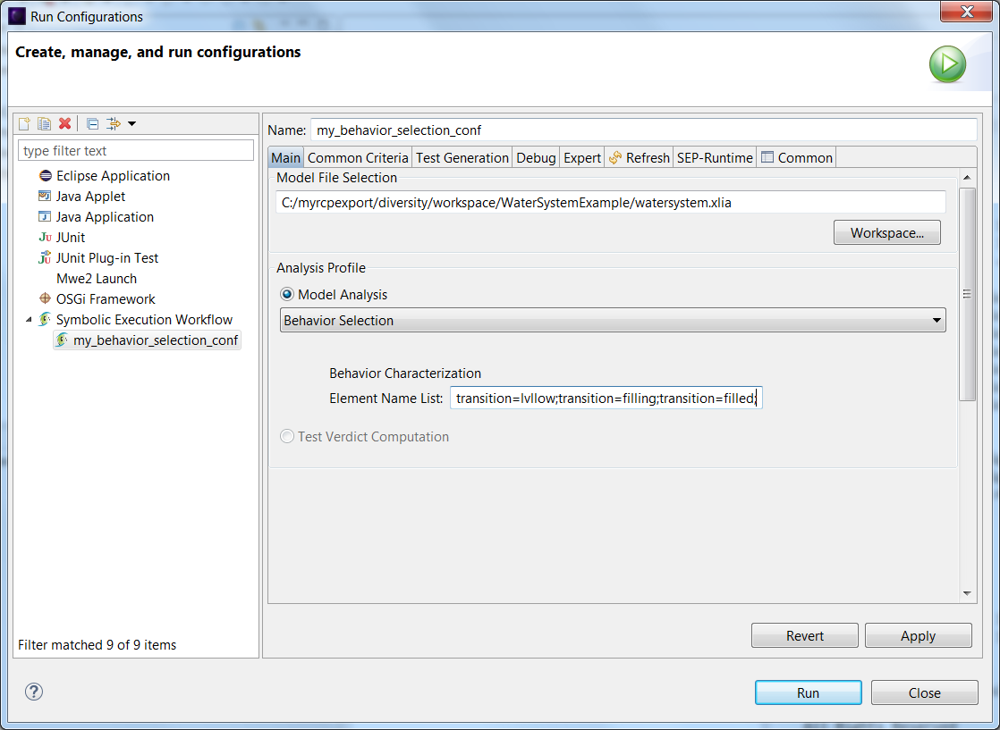
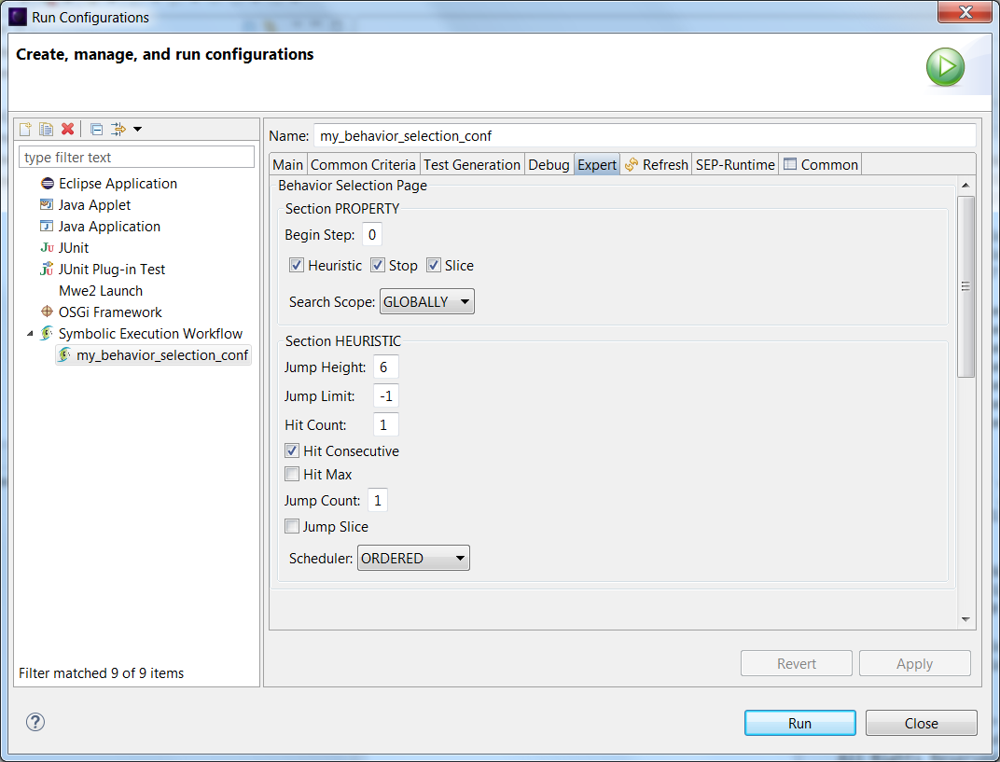
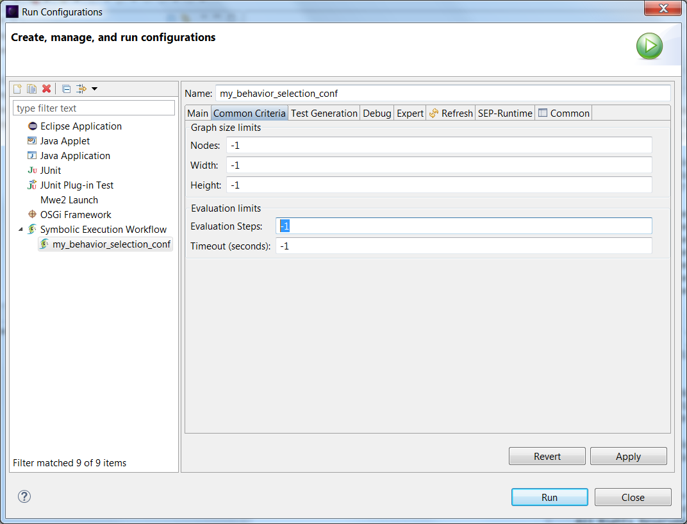
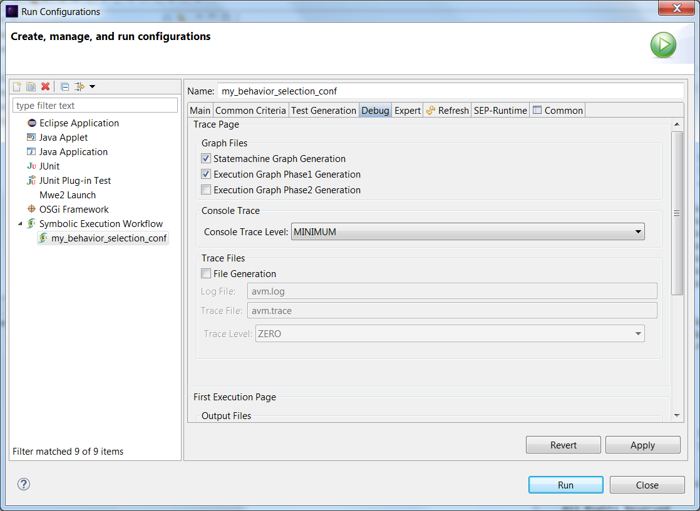
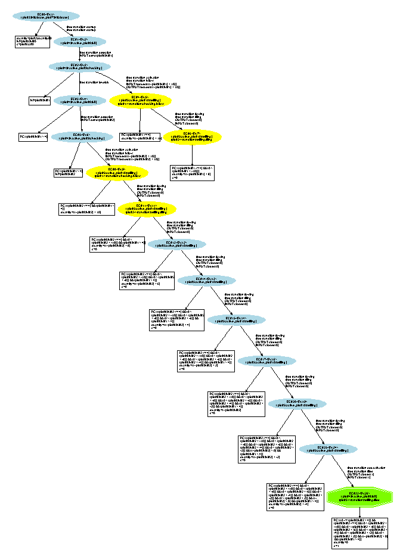

With Diversity, we can also isolate patterns of transitions and determine which inputs to the system are necessary to follow those patterns.
We wanted to isolate the following sequence :
To do that, on the "Run Configurations..." window, we will use "Behavior Selection" and write our sequence of transitions separated by semicolons :
To enforce each of the transitions of our sequence to be consecutive, we must check-in "Hit Consecutive" on the "Expert" tab.
This is important because otherwise, Diversity could isolate a sequence with any number of "filling" between "lvllow" and "filled".
We will also enter "-1" for the number of "Evaluation Steps" in the "Common Criteria" tab in order to not have a limit on the behavior selection :
To enable the graph generation, we tick the boxes "Statemachine Graph Generation" and "Execution Graph Phase1 Generation" :
As we can see in the generated graph, Diversity didn't manage to find our sequence. The two yellow transtions "lvllow" and "filling" are found in a consecutive fashion but we can't find a strictly consecutive sequence "lvllow" -> "filling" -> "filled":
Indeed, let's imagine we want to have the following transitions : "lvllow;filling*T;filled" which means that we want the system to detect an insufficient level of water and to ask the pump for a number T of pumping cycles.
Logically this would mean that the level respects :
LVLRECO - FLOW*(T+1) < lvl ≤ LVLRECO - FLOW*(T) ≤ LVLMIN
So that's it's low enough to ask for a refill but high enough to only require T pumping cycles :
FLOW*(T+1) > quantity ≥ FLOW*T ≥ LVLRECO - LVLMIN
We have :
Therefore what we were looking for i.e. "lvllow" -> "filling" -> "filled" is impossible.